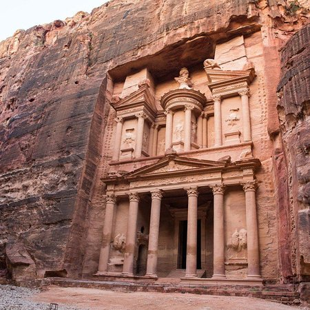

نبذة تاريخية
من أهم الحضارات: الأدومية، المؤابية، العمونية، النبطية، الرومانية، والبيزنطية.
يهدف هذا الموقع إلى التعريف بتاريخ الأردن العريق وأهم الحضارات التي تعاقبت على أرضه.
كما يعرض أهم المعالم والأحداث التي شكلت الهوية التاريخية للأردن.
من أهم الحضارات: الأدومية، المؤابية، العمونية، النبطية، الرومانية، والبيزنطية.
